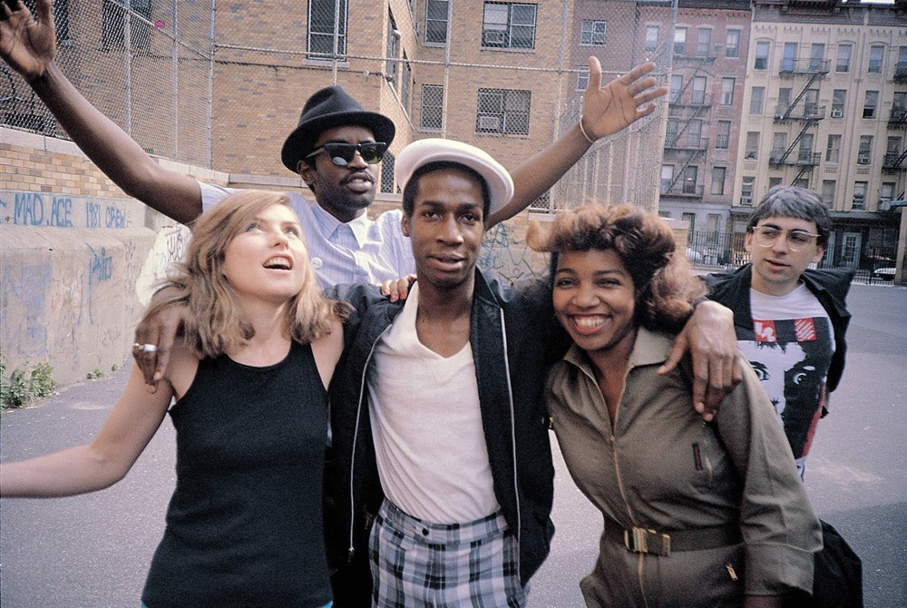

James Karales, Lower East Side, 7th Street, C + D, 1969.
James Karales, Lower East Side, 7th Street, C + D, 1969.

The World Trade Center photographed on a morning in 1972, one year before completion
via reddit

debbie harry, fab 5 freddy, grandmaster flash, tracy wormworth, and chris stein, photo charlie ahearn, 1981 @ waxpoetics
Helen Levitt, Untitled, New York City,1977